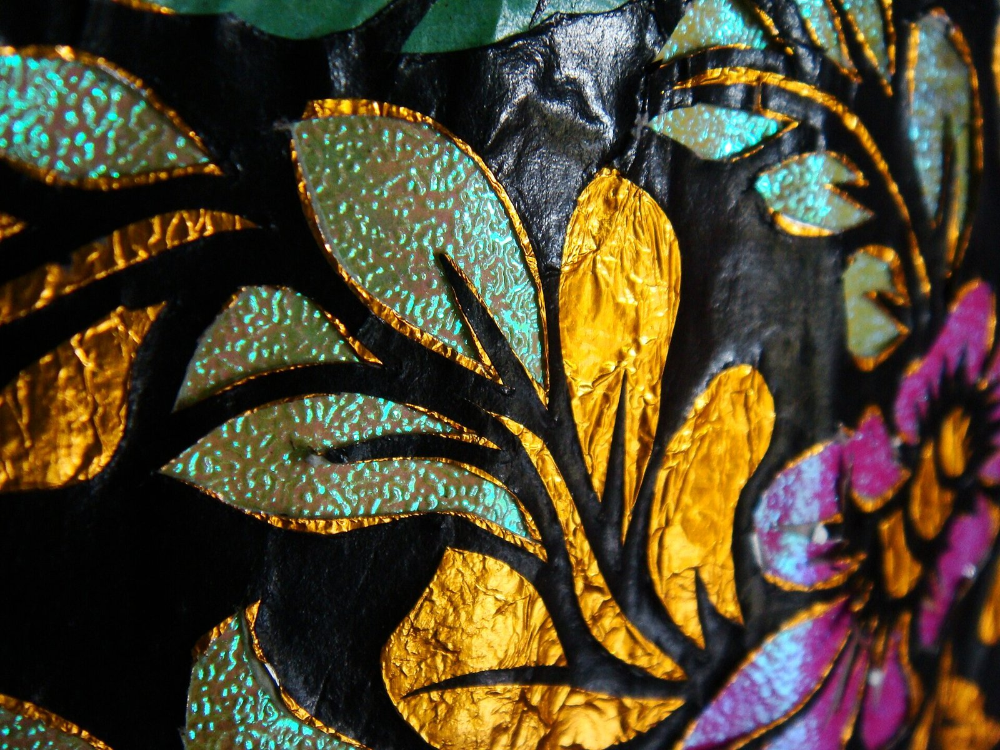
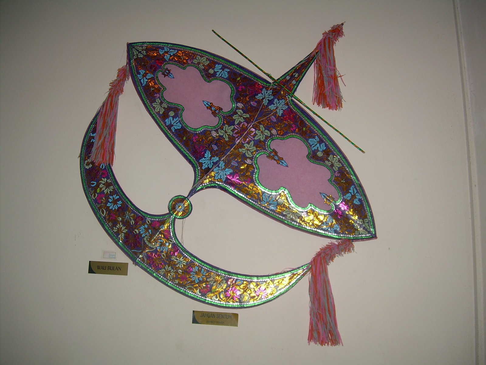
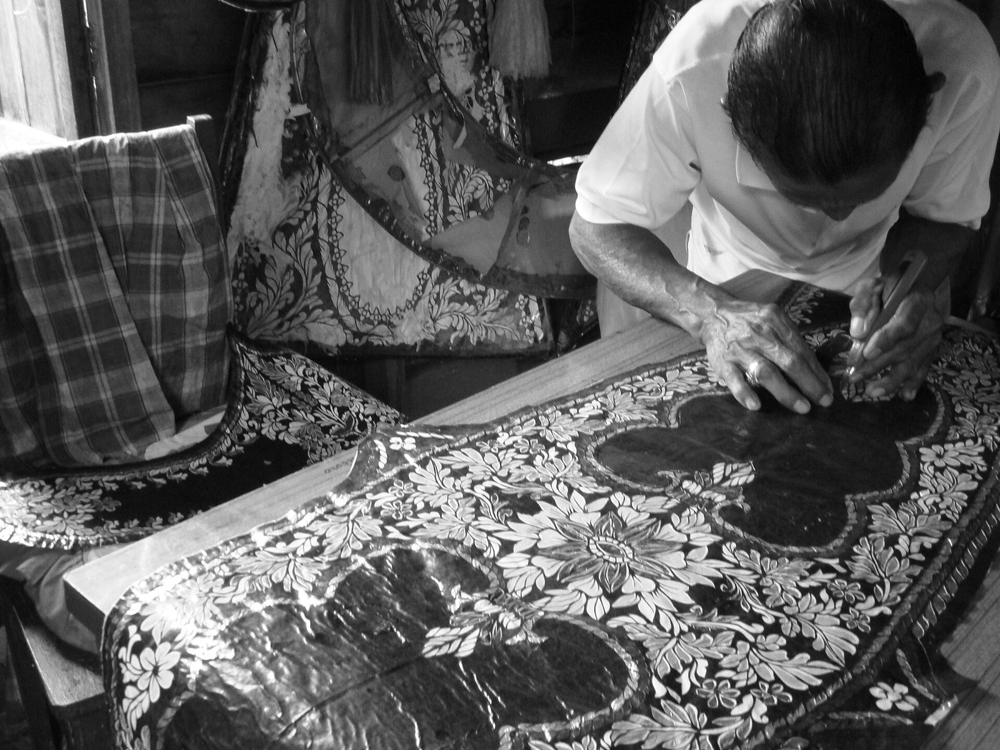

01 / DISCOVER
Discover the Wau
Meet the moon kite. Explore its distinctive silhouette, its connection to Kelantan and the artistic traditions behind its decoration.
Enquire about Discover the WauMALAYSIAN HERITAGE, IN YOUR HANDS
A little bamboo. A world of possibility.
Discover the patient artistry of Wau Bulan, Malaysia’s moon kite, through a studio concept that brings traditional craft closer to a new generation.
Explore Our Workshops

01 / THE STORY
FROM THE HAND TO THE SKY
Before it meets the wind,
it begins with a careful pair of hands.
Closely associated with Kelantan, Wau Bulan is recognised by the crescent shape of its lower section. Its sweeping outline gives the moon kite its name; its intricate surface invites a closer look.
Slender bamboo forms the frame. Decorative paper brings colour and texture, while floral and trailing plant motifs turn the surface into an expression of the maker’s skill.
LANGIT WAU STUDIO imagines a welcoming place to explore this craft: to notice its details, understand its materials and enjoy making something with care.
Find your way into the craftSplit, shape and tie slender bamboo to form a balanced frame.
Cut and layer decorative paper into flowing floral motifs.
Bring frame and covering together, then check balance before flight.
02 / THE EXPERIENCE
LOOK CLOSER. MAKE SOMETHING.Start with a story, follow a pattern or explore the whole process. Find the experience that speaks to your curiosity.
Illustrative student-project concepts. These workshops are not currently offered for booking.
Meet the moon kite. Explore its distinctive silhouette, its connection to Kelantan and the artistic traditions behind its decoration.
Enquire about Discover the WauLook to leaves, flowers and curling stems for inspiration. Explore the cut-and-layer paper techniques that give wau decoration its depth.
Enquire about Patterns & PaperFollow the journey from bamboo frame to finished kite. Learn how construction, balance and wind work together to make flight possible.
Enquire about Make & FlyA CLOSER LOOK
See the materials, patterns and patient handwork behind a Wau Bulan in this film from TourMalaysia.com TV.
YouTube video · Internet required
Use the player’s captions menu if available.
Playback depends on YouTube and your connection. Local playback verification is recorded in the project’s verification notes.
03 / START A CONVERSATION
Which part of the craft would you like to explore? Try the enquiry form and imagine your first step into the world of wau.
A studio imagined for learning.
LANGIT WAU STUDIO is a fictional ICT2215 coursework concept, not an operating business.